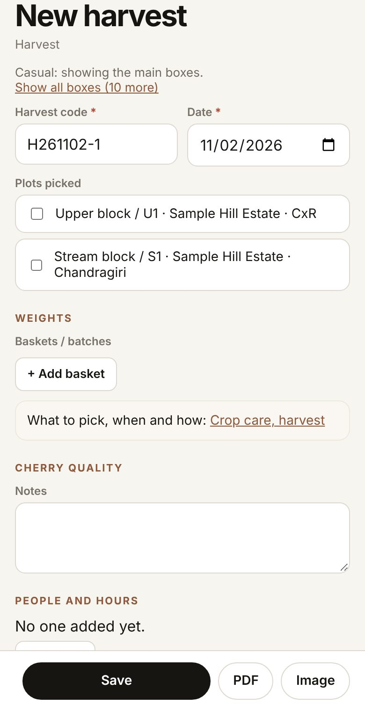

Step 1
The first time, Roast opens on Home: every part of the app is one tap away from here. Across the top, on every page: KoffyKraft (back to Home), the language box, the ? and the round person button. Below them, the menu scrolls sideways.

Start · Before the first record
A walk around before you record anything: Home, the ?, Make it yours, Now and its tiles, and Find.
Step 1
The first time, Roast opens on Home: every part of the app is one tap away from here. Across the top, on every page: KoffyKraft (back to Home), the language box, the ? and the round person button. Below them, the menu scrolls sideways.
Step 2 · Get started with the right first steps
First steps helps you begin. Tap I grow, I roast or I brew for a short list for that work, with a button for the first step. For a grower it starts with Add your estate. Tap Hide when you no longer need it.

Also inGetting set up
Step 3
Further down, the groups Farm, Lots, Roast and cup and Business hold a button for each part of the app.

Also inFinding your way
Tip
The language box puts the overviews and explanations into Malayalam, Kannada, Tamil, Spanish or Portuguese. Buttons, field names and numbers stay in English, so this manual still matches what you see.
What it is · Get help on the page I am on
The ? opens the guide at the part about the page you are on, on every page including Now. The person button opens Me: your activity on this phone, and Account and sign-in, Shared spaces and My data.

Also inFinding your way
Step 4 · Put my own pages first
Open Make it yours from Home, from the card on Now, or later from Account. It asks four questions so the pages you use most come first. Nothing is hidden: everything else stays one tap away.

Also inGetting set up
Step 5
What do you do? Tick all that fit: Grow, Process, Roast, Brew, Taste, Buy or sell, Teach or learn. How deep? Casual, Keen or Professional. Who uses it? Just me, A few of us or A business; with more than one person, Team joins your pages. Open the app on: the page Roast opens on from now on.

Also inGetting set up
Step 6
Tap Show my pages. You land on Now, and the menu changes on every page: Now, then your own pages (up to seven), then All and Account. Before you answer, the menu stays as it was.
What it is · Choose how many boxes the forms show
How deep? decides how many boxes a form shows. Casual shows the main boxes, Keen a few more (picking, ripeness, Brix, grade), Professional every box. A box that already holds something always shows. On any form, Show all boxes brings back the rest for that visit, and you can change your answer any time on Account.

What it is · See what is live today
Now shows what is live on this phone: plots to look at, harvests this week, runs in process, green stock and roasts resting.

Also inFinding your way
Step 7
Tap a tile to jump to its section. Tap the dashed Tiles tile to choose which tiles Now shows, grouped from land to cup; Use my activities ticks the ones that match Make it yours.

Also inFinding your way
Step 8 · Add something new from anywhere
The bar at the bottom stays in reach of your thumb. New adds a harvest, process run, reading, green lot, roast, brew or cup, colour reading or plot. Find opens Find. Home goes home. Scan reads a KoffyKraft QR with the camera, or from a saved photo or screenshot.

What it is
Each section has its own quick button, such as + New harvest, + New run, + Add green and + Start roast. My pages lists your pinned pages (Edit changes them). The Done shelf keeps finished work by coffee season (October to September) and month, so Now stays short.
Also inFinding your way
Tip
The small i beside the word Now says how long things stay live: a run until a green lot is made from it (or 60 days pass), a roast for 30 days while it rests. If you only brew or taste, the bottom bar changes to New brew, Repeat last and Brew timer.
Also inFinding your way
Step 9 · Find a plot, lot or code
Type in the Find box on Home or Now, or tap Find. Type part of a name or a code. Your records come first, each with its kind on the right. Tap one to open it. Under the results: Searched on this phone. Works with no signal.

Why it matters
Codes and names are how records find each other. When a lot comes up after three letters, a buyer's question gets answered standing in the store room.
Also inOne coffee, one chain